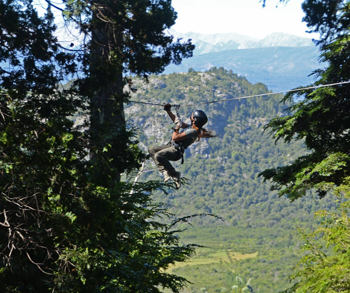
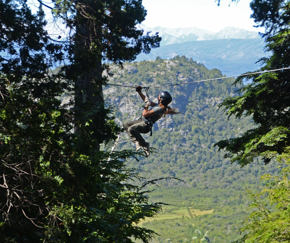
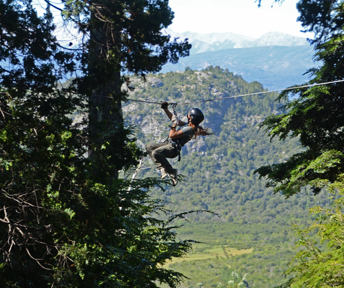

TOURS & EXPERIENCIAS
El mayor desafío es qué hacer primero. Conocé las actividades en Bariloche.
Conocé más
 

Con distancias de 50 & 70 Kilómetros, celebra la maravillosa posibilidad de correr en los senderos y montañas clásicos de San Carlos de Bariloche.
Conocé másLlega la tradicional carrera de autos sports históricos. Un verdadero museo itinerante recorren nuestra ciudad en una fiesta increíble para los amantes del deporte motor.
Conocé másBariloche es una ciudad ubicada entre bosques milenarios, montañas cubiertas de nieve y lagos cristalinos, en la provincia de Río Negro, Argentina. Se trata de una postal de nuestra Patagonia. Una ciudad anfitriona por excelencia, enmarcada por algunas de las bellezas naturales más importantes del país.
Conocé másEl mayor desafío es qué hacer primero. Conocé las actividades en Bariloche.
Conocé más
